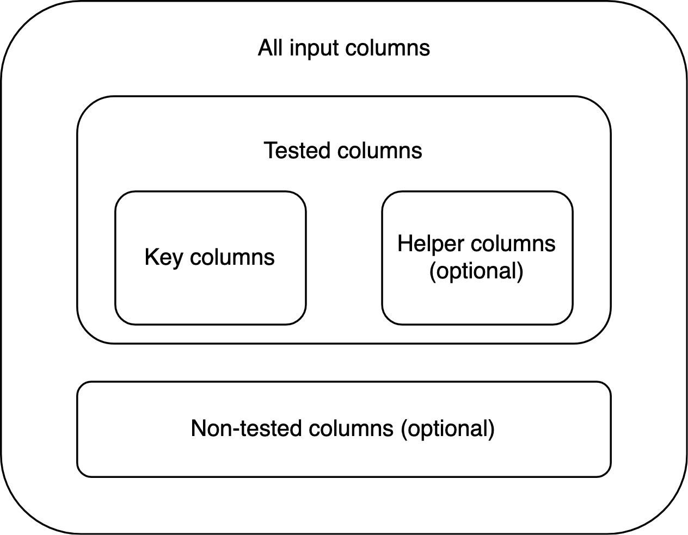
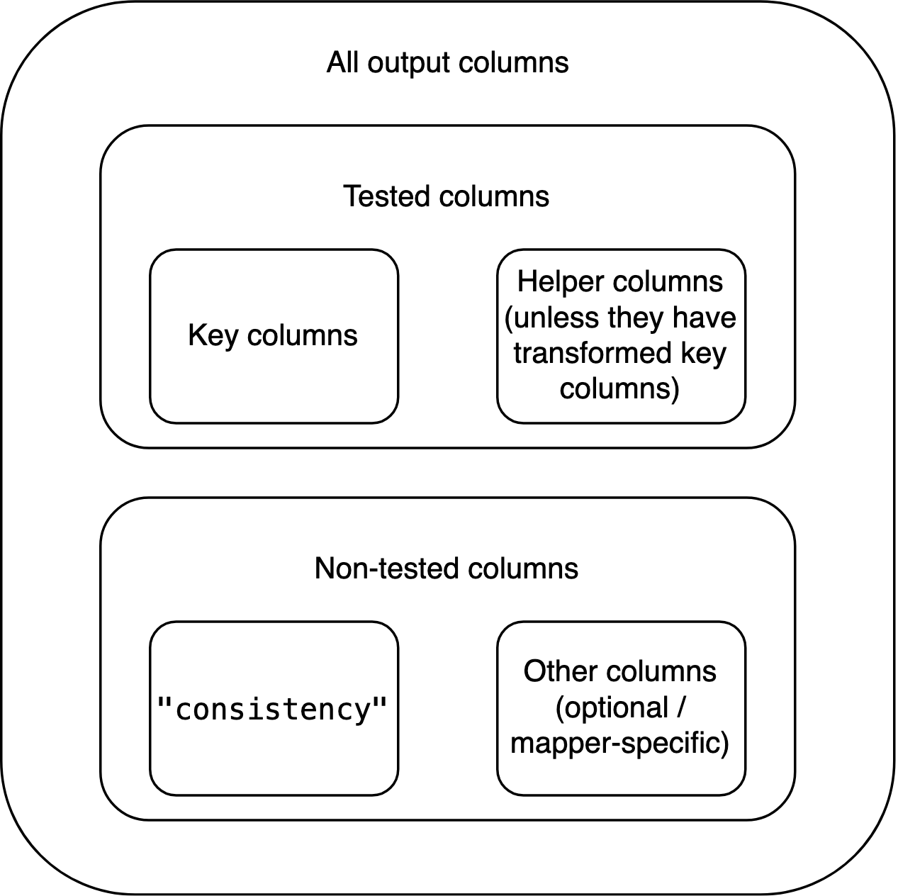
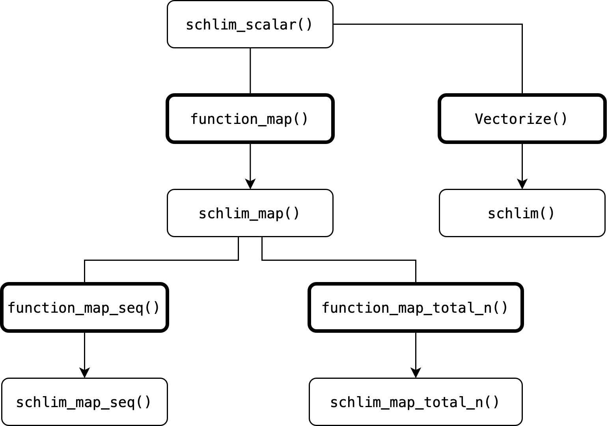

Consistency tests in depth
Source:vignettes/consistency-tests-in-depth.Rmd
consistency-tests-in-depth.RmdIntroduction
When implementing consistency tests in R, you shouldn’t have to start
from zero. This vignette goes into detail on scrutiny’s support system
for writing new consistency testing functions. For a brief presentation,
see vignette("consistency-tests-simple").
Following the present vignette will dramatically simplify the implementation of basic and advanced testing routines via function factories. It will enable you to write entire families of functions in a streamlined way: If you are familiar with any one scrutiny-style consistency test, you will immediately be able to make some sense of the other ones. This is true across all levels of consistency testing.
Below is an outline of these levels, and of the vignette, with GRIM as a paradigmatic example. If a valid consistency test is newly implemented with at least the first step, I’ll be happy to accept a pull request to scrutiny. This means you’ll only have to implement the core test itself, without even reading the vignette any further.
A bare-bones, non-exported (!) function for testing a single set of cases, such as
grim_scalar().A vectorized version of the single-case function, such as
grim().A specialized mapping function that applies the single-case function to a data frame, such as
grim_map().A method for the
audit()generic that summarizes the results of number 3.A visualization function that plots the results of number 3, such as
grim_plot().A mapping function that checks if slightly varied input values are consistent with the respective other reported values, such as
grim_map_seq().A mapping function to be used if only the total sample size was reported (in a study with two groups), not the individual group sizes, such as
grim_map_total_n().audit_seq()andaudit_total_n()already work with the output of numbers 6 and 7, respectively. They still have to be specifically documented.
I will use a toy test called SCHLIM as a model to demonstrate the minimal steps needed to implement consistency tests, scrutiny-style. Note that SCHLIM doesn’t have any significance beyond standing in for serious consistency tests. Any real implementation might well be more complex than the brief code snippets below. I will also recur to existing functions that implement actual tests, and that the reader may be familiar with.
Please make sure to follow the tidyverse style guide as well as the scrutiny-specific conventions laid out below, wherever applicable. If you’d like to write a new package, work with the free online book R Packages (Wickham and Bryan 2023).
1. Single-case
The first function is the most important one. It contains the core implementation of the test. Although it is not exported itself, all other steps build up on it, and all of them are exported.
This function takes two or more arguments of length 1 that are meant
to be tested for consistency with each other. Typically, they will be
coercible to numeric. This means they either are numeric themselves or
they are strings that can be converted to numbers (see
is_numeric_like()). The function returns a logical value of
length 1: It’s TRUE if the inputs are mutually consistent,
and FALSE if they aren’t.
schlim_scalar <- function(y, n) {
y <- as.numeric(y)
n <- as.numeric(n)
all(y / 3 > n)
}
schlim_scalar(y = 30, n = 4)
#> [1] TRUE
schlim_scalar(y = 2, n = 7)
#> [1] FALSEOther arguments might still be necessary, especially if your function
reconstructs rounded numbers. An argument that determines how the
function will round numbers should be called rounding. The
function should then internally call reround(). The same
goes for “unrounding” (i.e., reconstructing rounding bounds) and
unround(). See also
vignette("rounding-in-depth"). A single-case function that
performs rounding will also need a helper to count decimal places, which
should be decimal_places_scalar().
The function’s name is that of the test in lowercase, followed by
_scalar which refers to the one-case limit. If your
function happens to be applicable to multiple value sets already due to
R’s natural vectorization, leave out _scalar and skip the
next section. If you’re building a package, export the function. (This
will rarely be the case because every single argument needs to be
vectorized.)
2. Vectorized
The easiest way to turn a scalar function into a vectorized (i.e.,
multiple-case) function is to run Vectorize() on it. The
name of the resulting function should be the lower-case name of the test
itself, which is also the name of the single-case function without
_scalar:
schlim <- Vectorize(schlim_scalar)
schlim(y = 10:15, n = 4)
#> [1] FALSE FALSE FALSE TRUE TRUE TRUEFunctions created this way can be useful for quick testing, but they
won’t be used in the remaining part of the vignette. That’s because
functions like schlim() are not great to build upon —
unlike mapper functions, which will be discussed next.
3. Basic mapper
Introduction
The most important practical use of a consistency test within
scrutiny is to apply it to entire data frames at once, as
grim_map() does. That’s also the starting point for every
other function below.
Most functions discussed in the remaining part of the vignette deal with data frames. I always use tibbles, and I strongly recommend the same to you. In fact, the mapper functions introduced here require tibbles. They might not work correctly with non-tibble data frames.
Creating basic mappers with function_map()
The safest and easiest way to create a (basic) mapper is via
function_map(). A function written this way is also
guaranteed to fulfill all of the requirements for mapper functions
listed further below. That’s a major benefit because the list of
requirements is long, and all of the follow-up functions in the
remaining vignette assume that the mapper fulfills them.
You will have no such troubles with function_map():
schlim_map <- function_map(
.fun = schlim_scalar,
.reported = c("y", "n"),
.name_test = "SCHLIM"
)
# Example data:
df1 <- tibble::tibble(y = 16:25, n = 3:12)
schlim_map(df1)
#> # A tibble: 10 × 3
#> y n consistency
#> <int> <int> <lgl>
#> 1 16 3 TRUE
#> 2 17 4 TRUE
#> 3 18 5 TRUE
#> 4 19 6 TRUE
#> 5 20 7 FALSE
#> 6 21 8 FALSE
#> 7 22 9 FALSE
#> 8 23 10 FALSE
#> 9 24 11 FALSE
#> 10 25 12 FALSEThese are the most important arguments:
.funis the single-case function from section 1..reportedis a string vector naming the reported statistics that.funtests for consistency with each other. These need to be arguments of.fun, but.funmay have other arguments, as well..name_testsimply names the consistency test.
Context and export
As you can see, function_map() is not a helper used
inside other functions when creating them with function() —
instead, it takes the place of function() itself. This
makes it a so-called function factory, or more precisely, a function
operator (Wickham 2019). You already
met base::Vectorize() in section 2, which is also a
function operator, but a more general and straightforward one.
To export a function manufactured this way from your own package, make sure to follow this purrr FAQ. (Incredible as it sounds, scrutiny will then take on the role of purrr.) Your version should look about like this:
schlim_map <- function(...) "dummy"
.onLoad <- function(lib, pkg) {
schlim_map <<- scrutiny::function_map(
.fun = schlim_scalar,
.reported = c("y", "n"),
.name_test = "SCHLIM"
)
}Identifying columns
All such factory-made functions come with a special convenience
feature: Their .reported values are inserted into the list
of the function’s parameters. This means you don’t need a data frame
with the same column names as the .reported values.
Instead, you can specify the arguments by those names as the names of
the actual columns:
df2 <- df1
names(df2) <- c("foo", "bar")
df2
#> # A tibble: 10 × 2
#> foo bar
#> <int> <int>
#> 1 16 3
#> 2 17 4
#> 3 18 5
#> 4 19 6
#> 5 20 7
#> 6 21 8
#> 7 22 9
#> 8 23 10
#> 9 24 11
#> 10 25 12
schlim_map(df2, y = foo, n = bar)
#> # A tibble: 10 × 3
#> y n consistency
#> <int> <int> <lgl>
#> 1 16 3 TRUE
#> 2 17 4 TRUE
#> 3 18 5 TRUE
#> 4 19 6 TRUE
#> 5 20 7 FALSE
#> 6 21 8 FALSE
#> 7 22 9 FALSE
#> 8 23 10 FALSE
#> 9 24 11 FALSE
#> 10 25 12 FALSEIf any columns are neither present in the data frame nor identified via arguments, there will be a precise error:
schlim_map(df2, y = foo)
#> Error in `check_factory_key_args_names()` at scrutiny/R/function-factory-helpers.R:276:3:
#> ! Column `n` is missing from `data`.
#> ✖ It should be a column of the input data frame.
#> ℹ Alternatively, specify the `n` argument of `schlim_map()` as the name of the
#> equivalent column.
# With a wrong identification:
schlim_map(df2, n = mike)
#> Error in `check_factory_key_args_values()` at scrutiny/R/function-factory-helpers.R:275:3:
#> ! `mike` is not a column name of `data`.
#> ✖ The `n` argument of `schlim_map()` was specified as `mike`, but there is no
#> column in `data` called `mike`.Drawbacks
If function_map() is so helpful, why would you ever not
use it? There are four reasons:
Functions produced by
function_map()don’t have any tailor-made checks, messages, or transformations for any specific consistency test. (They do have some more general checks and error messages.)They only have limited capabilities to create columns internally other than
"consistency": Values in such columns need to be produced by the basic*_scalar()function. (This might replace tailor-made functionality for creating thereasoncolumn in the output of the handwrittengrimmer_map(), but it is currently experimental.)They don’t support helper columns (see Terminology below).
Finally, when calling such a manufactured function, any test-specific arguments the user might specify via
…(the dots) won’t trigger RStudio’s autocomplete. This is not as dangerous as in some other functions that use the dots because, when calling a function produced byfunction_map(), misspelled argument names always throw an error.
grim_map(), grimmer_map(), and
debit_map() were all “handwritten” for flexibility with
columns beyond "consistency". For example, the
show_rec argument in grim_map() or the
ratio column in the function’s output would not have been
possible with function_map(). However, such issues don’t
affect the "consistency" results, and simply going with
function_map() might often be the better option. If that’s
what you choose to do, skip right to section 4.
Writing mappers manually
Introduction
The remaining part of section 3 explains how to manually write mapper
functions like grim_map(), grimmer_map(), or
debit_map(). It is quite detailed because it’s important to
get these things right: Every other function in the rest of this
vignette builds up on it. Still, the practical steps are not that
complicated, as you can see in the code examples.
Terminology
It’s important to distinguish between key arguments or
columns and other arguments or columns. The key arguments in a
scalar or vectorized consistency-testing function are the values that
are tested for consistency with each other, such as x and
n in grim(). By extension, key columns are
those that contain such values. Every key column has the same name as
the respective key argument.
A helper column is a column that is not key itself, but
still factors into the consistency test. An example is the optional
items column in grim_map()’s input data frame:
It transforms the n column, which in turn affects the test
outcomes. However, helper columns need not work via key columns.
Key and helper columns are tested columns because they factor into the test. Any other columns are non-tested.
Requirements
A general system for implementing consistency tests needs some consistency itself. This is especially true for basic mapper functions, because all functions further down the line rely on the mapper’s output having some very specific properties.
The level of detail in these requirements might seem pedantic. I still encourage you to follow every step when handwriting a new mapping function. It’s easier than it looks at first, and many aspects are indispensable. That is because the interplay between the mapper and the higher-level functions follows a carefully concerted system. If the mapper misses any one ingredient, those other functions may fail.
The (only) requirements for a basic mapping function are:
Its name ends on
_mapinstead of_scalarbut is otherwise the same as the name of the respective_scalarfunction.Its first argument,
data, is a tibble (data frame) that contains the key columns of the respective consistency test. Other columns are permitted. The mapper’s user never needs to include helper columns and can always replace them by specifying arguments by the same names as those columns. If the user specifies such an argument but the input data frame contains a column by the same name, the function throws an error. No column of the input data frame should be named"consistency".Its return value is a tibble data frame that contains all of the key input columns. The types of these columns are the same as in the input data frame. They are the first (i.e., leftmost) columns in the output, even if the input isn’t ordered this way. If any of these columns are modified within the mapping function, the output should include the modified columns, not the original ones. Examples can be effects of helper columns, but also the change displayed by the
"x"column in the output ofgrim_map(percent = TRUE). The output must testTRUEwithis_map_df()andis_map_basic_df(), butFALSEwith the other twois_map_*()functions.Helper columns should be included in the output unless they transform one or more key columns. In this case, representing them in the output would be confusing because their effects have already played out via the transformed key column(s). For every helper column that performs such transformations, the mapper should have a logical argument,
TRUEby default, that determines whether or not the helper column transforms those key column(s). IfTRUE, the helper column does but is not included in the output itself. IfFALSE, the helper column is included but no transformation takes place. The name of this logical argument should start onmerge_, followed by the name of the helper column in question. An example for all of that is the optionalitemscolumn ingrim_map()’s input data frame, together with this function’sitemsandmerge_itemsarguments. To work with helper columns, callmanage_helper_col()within the mapper.The output data frame also includes a logical column named
"consistency". It contains the results of the consistency test, as determined by the respective*_scalar()function. In each row,"consistency"isTRUEif the values to its left are mutually consistent, andFALSEif they aren’t. This column is placed immediately to the right of the group of key (and, potentially, helper) columns.If the underlying single-case function performs rounding or unrounding, it should internally call
reround()and/orunround(), respectively. The output data frame of the mapper function will then inherit an S3 class (see section S3 classes below) such as"scr_rounding_up_or_down": It consists of"scr_rounding_"followed by the rounding specification, e.g.,"up_or_down". The latter should also be the default rounding and unrounding specification. This specification can be supplied by the user via an argument calledrounding, which is then passed down to the single-case function. Ifreround()is called within the mapper, all of its arguments need to be passed down from the mapper, which itself has all of the same arguments, with the same defaults. The same applies tounround().The output data frame inherits an S3 class that starts on
"scr_"(short for scrutiny), followed by the name of the mapper function. For example, the output ofgrim_map()inherits the"scr_grim_map"class. The"scr_"prefix is necessary for some follow-up computations introduced below, so it should be used even within functions that are not part of scrutiny. Any other classes added to the output data frame should also start on"scr_". None of them should end on"_map".
Implications
Some implications of these requirements, and of the fact that the design space for mapper functions is not restricted in any other ways:
Anything that factors into the consistency test other than tested
columns needs to be conveyed to the mapper function via arguments. An
example is the rounding argument in
grim_map(). Mapper functions don’t need to allow for helper
columns.
The input data frame is not necessarily a tibble, but the output data
frame is. The input data frame never contains a column named
"consistency", but the output data frame always does.
Key columns may or may not be modified by helper columns and/or by arguments. The number of key columns doesn’t change between the input and output data frames.
The output data frame may or may not contain non-tested columns from
the input. It may or may not contain non-tested columns created within
the mapper function itself. (This can be useful, as with
"ratio" in grim_map()’s output.) Any such
non-tested, non-"consistency" columns go to the right of
"consistency".
If the number of key columns plus the number of helper columns in the
output is
,
the index of "consistency" is
.
Besides the "scr_*_map" class, the output data frame may
inherit any number of other classes added within the mapper, so long as
they start on "scr_" but don’t end on "_map".
It can’t inherit the "grouped_df" or
"rowwise_df" classes added by
dplyr::group_by() and dplyr::rowwise(),
respectively. If either of these functions is called within the mapper,
it needs to be followed by dplyr::ungroup() at some
point.
The columns of the input data frame are organized like this:

By contrast, the columns of the output data frame are organized like this:

Practical steps
How to actually write mapper functions? Again, I recommend
function_map(). The two functions created below are very
similar but don’t have as many options. Of course, you can manually add
code for any options you like so long as the requirements above are
still met.
Apply the *_scalar() function to the input data frame
using purrr::pmap_lgl():
schlim_map_alt1 <- function(data, ...) {
scrutiny::check_mapper_input_colnames(data, c("y", "n"), "SCHLIM")
tibble::tibble(
y = data$y,
n = data$n,
consistency = purrr::pmap_lgl(data, schlim_scalar, ...)
) %>%
add_class("scr_schlim_map") # See section "S3 classes" below
}Alternatively, you might call dplyr::rowwise() and
directly mutate "consistency". I don’t recommend this
approach because dplyr::rowwise() is quite slow.
schlim_map_alt2 <- function(data, ...) {
scrutiny::check_mapper_input_colnames(data, c("y", "n"), "SCHLIM")
data %>%
dplyr::rowwise() %>%
dplyr::mutate(consistency = schlim_scalar(y, n, ...)) %>%
dplyr::ungroup() %>%
dplyr::relocate(y, n, consistency) %>%
add_class("scr_schlim_map") # See section "S3 classes" below
}The call to check_mapper_input_colnames() is not
required but adds safety to your function. Also, see
manage_key_colnames() which grants the user more
flexibility in naming key columns.
Both approaches should lead to the same results:
schlim_map_alt1(df1)
#> # A tibble: 10 × 3
#> y n consistency
#> <int> <int> <lgl>
#> 1 16 3 TRUE
#> 2 17 4 TRUE
#> 3 18 5 TRUE
#> 4 19 6 TRUE
#> 5 20 7 FALSE
#> 6 21 8 FALSE
#> 7 22 9 FALSE
#> 8 23 10 FALSE
#> 9 24 11 FALSE
#> 10 25 12 FALSE
schlim_map_alt2(df1)
#> # A tibble: 10 × 3
#> y n consistency
#> <int> <int> <lgl>
#> 1 16 3 TRUE
#> 2 17 4 TRUE
#> 3 18 5 TRUE
#> 4 19 6 TRUE
#> 5 20 7 FALSE
#> 6 21 8 FALSE
#> 7 22 9 FALSE
#> 8 23 10 FALSE
#> 9 24 11 FALSE
#> 10 25 12 FALSETesting
You should let function_map() produce an equivalent
function to make sure that it returns the same output as your
handwritten one. To compare the two output data frames, don’t just
eyeball them. Use waldo::compare() or, if you already run
tests with testthat, expect_equal().
If your handwritten mapper creates new columns beyond
"consistency", you’ll have to remove them from the output
first. Don’t use helper columns when testing because
function_map() can’t handle them.
S3 classes
If you don’t know what S3 classes are, don’t worry. Just copy and
paste the function below, and call it at the end of your mapper
function. x is the output data frame, and
new_class is a string vector. new_class
consists of one or more “classes” that will be added to the existing
classes of x.
You can access the classes that an object carries — or “inherits” —
by calling class():
Internal helpers
Within scrutiny, many functions that are exported for users
internally call helper functions that are not, such as
add_class(). You might be writing your own function
following the design of an exported scrutiny function, but suddenly you
can’t access an unknown function that you seem to need!
If you’d like to employ such an internal helper for yourself, specify
its namespace with three colons, like scrutiny:::add_class.
However, you should only use this trick to copy and paste the helper’s
source code into your own source code. (That’s why I left out the
parentheses — return the function itself.) Never rely on calling a
function with :::, because these internals are not actually
meant for users. They can easily shift and vanish without notice.
If you develop your own package, see this blogpost by Thomas Lin Pedersen for more information on using internal code from other packages. In particular, package developers should mind licenses when copying code from scrutiny because scrutiny is GPL-3 licensed.
When directly looking for internal helpers in scrutiny’s source code, start at the utils.R file. Most helpers can be found there, and every helper in utils.R is documented.
4. audit() method
Introduction
audit() is an S3 generic for summarizing scrutiny’s test
result data frames, especially those of mapper functions such as
grim_map(). It should always return descriptive statistics
but nothing else. Every mapper function should have its corresponding
audit() method.
This is an aspect of object-oriented programming (OOP), but
scrutiny’s use of OOP is simple even by the low standards of R. Your
mapper function’s output already inherits a specific class, such as
"scr_grim_map", "scr_grimmer_map", or
"scr_debit_map". In schlim_map(), we added the
"scr_schlim_map" class in addition to existing classes:
df1_tested <- schlim_map(df1)
class(df1_tested)
#> [1] "scr_schlim_map" "tbl_df" "tbl" "data.frame"Basics
Every audit() method for consistency test results should
be the same insofar as all consistency tests are the same. It should
have a single argument named data. Its return value should
be a tibble with at least these columns:
incons_casescounts the inconsistent cases, i.e., the number of rows in the mapper’s output where"consistency"isFALSE.all_casesis the total number of rows in the mapper’s output.incons_rateis the ratio ofincons_casestoall_cases.
Apart from these, see for yourself which descriptive statistics your
audit() method should compute. Means of variables in the
*_map() function’s output and their ratios to each other
might be sensible choices.
All existing audit() methods for consistency tests
return tibbles with a single row only. This makes sense because there is
no obvious grouping variable for the input data frame, which would lead
to multiple rows in audit()’s output. However, there might
be good reasons for multiple rows when summarizing the results of other
tests, so this is not a requirement.
Practical steps
Your audit() method is simply a function named
audit plus a dot and your specific class. Call
audit_cols_minimal() within the method to create a tibble
with the three required columns. If you don’t use
audit_cols_minimal(), call
check_audit_special() in your method.
# The `name_test` argument is only for the alert
# that might be issued by `check_audit_special()`:
audit.scr_schlim_map <- function(data) {
audit_cols_minimal(data, name_test = "SCHLIM")
}
# This calls our new method:
audit(df1_tested)
#> # A tibble: 1 × 3
#> incons_cases all_cases incons_rate
#> <int> <int> <dbl>
#> 1 6 10 0.6
# This doesn't work because no method was defined:
audit(iris)
#> Error in UseMethod("audit"): no applicable method for 'audit' applied to an object of class "data.frame"You can still add other summary columns to the tibble returned by
audit_cols_minimal(). Use dplyr::mutate() or
similar.
Documentation template
Each audit() method should be documented on the same
page as its respective mapper function. It should have its own section
called Summaries with audit(). Create it with
write_doc_audit():
audit_grim <- audit(grim_map(pigs1))
audit_grimmer <- audit(grimmer_map(pigs5))
write_doc_audit(sample_output = audit_grim, name_test = "GRIM")
#> #' @section Summaries with `audit()`: There is an S3 method for `audit()`, so
#> #' you can call `audit()` following `grim_map()` to get a summary of
#> #' `grim_map()`'s results. It is a tibble with a single row and these
#> #' columns --
#> #'
#> #' 1. `incons_cases`: number of GRIM-inconsistent value sets.
#> #' 2. `all_cases`: total number of value sets.
#> #' 3. `incons_rate`: proportion of GRIM-inconsistent value sets.
#> #' 4. `mean_grim_prob`:
#> #' 5. `incons_to_prob`:
#> #' 6. `testable_cases`:
#> #' 7. `testable_rate`:
write_doc_audit(sample_output = audit_grimmer, name_test = "GRIMMER")
#> #' @section Summaries with `audit()`: There is an S3 method for `audit()`, so
#> #' you can call `audit()` following `grimmer_map()` to get a summary of
#> #' `grimmer_map()`'s results. It is a tibble with a single row and these
#> #' columns --
#> #'
#> #' 1. `incons_cases`: number of GRIMMER-inconsistent value sets.
#> #' 2. `all_cases`: total number of value sets.
#> #' 3. `incons_rate`: proportion of GRIMMER-inconsistent value sets.
#> #' 4. `fail_grim`:
#> #' 5. `fail_test1`:
#> #' 6. `fail_test2`:
#> #' 7. `fail_test3`:This function prepares a roxygen2 block section. It fills the three
standard columns out for you, and it leaves space to describe any other
columns there might be. Also, the internal checks of
write_doc_audit() make sure that you programmed a correct
audit() method, as represented by the value of the
sample_output argument.
Copy the output from the console and paste it into the roxygen2 block
of your *_map() function. To preserve the numbered list
structure when indenting roxygen2 comments with
Ctrl+Shift+/, leave empty lines
between the pasted output and the rest of the block.
5. Visualization function
Introduction
It is hard to give general advice on how to implement visualization
functions for the results of consistency tests. As with the
*_scalar() function, the best way to plot such results
greatly depends on the idiosyncratic nature of the consistency test
itself. When comparing the looks of grim_plot() and
debit_plot(), it becomes clear that two very different
things are going on. (This is mainly because granularity is crucial for
GRIM but not for DEBIT.)
Requirements
Nevertheless, some general requirements do apply to scrutiny-style visualization functions. They are much more like arbitrary conventions than the requirements for mapper functions, which often meet very precise technical needs. Visualization functions, however, are not the basis for any other computations apart from modifications by additional ggplot2 layers.
As a result, the rules below are admittedly somewhat less important. If you violate them, nobody but me will be sad about it.
- All visualization functions should be based on ggplot2. They should follow its developers’ general advice on using ggplot2 in packages. Visualization functions don’t need to implement any newly created layers, such as geoms or themes. Indeed, neither of the two existing visualization functions relies on any new layers.
- The visualization function’s name should be that of the test itself
(in lowercase), followed by
_plot. Naturally, this doesn’t apply to methods for generic functions likeplot()orggplot2::autoplot(). - Its first argument,
data, is a data frame that is the result of a call to the respective mapper function, such asgrim_map()ordebit_map(). The visualization function makes sure this is true by checking thatdatainherits the special class added within the mapper, such as"scr_grim_map"or"scr_debit_map". Ifdatafails this check, the function throws an error. - The function should display consistent and inconsistent value sets.
The color defaults should be
"royalblue1"for consistent value sets and"red"for inconsistent ones. The user can override these defaults via two arguments namedcolor_consfor consistent value sets andcolor_inconsfor inconsistent ones. - If certain layers are optional rather than essential to the plot,
their display can be controlled via logical arguments that start on
show_. Examples areshow_dataingrim_plot()orshow_outer_boxesindebit_plot(). Only arguments of this kind should start onshow_. They should have defaults (which will usually beTRUE, but this is not a requirement).
6. Sequence mapper
Introduction
When reported values are inconsistent, it’s never obvious why. Consistency tests provide mathematical certainty in their results, but there is a trade-off: They don’t suggest any clear causal story about the summary statistics. (Contrast this with a reconstruction technique such as SPRITE, which does not aim at mathematical proof but does point towards major issues with the origins of the data.)
One possible reason for inconsistencies lies in small mistakes in computing and/or reporting by the original researchers. Indeed, when Brown and Heathers (2017) reanalyzed some of the data sets behind GRIM inconsistencies, they often found “a straightforward explanation, such as a minor error in the reported sample sizes, or a failure to report the exclusion of a participant” (p. 368).
It may therefore be useful to test the numeric neighborhood of
inconsistent reported values. Are there any nearby values that are
consistent with the other statistics? If so, how many and where? The
problem might then be due to a simple oversight. However, it would be
very cumbersome to test each candidate value manually, or even to test
sequences that were manually created with functions such as
seq_distance().
Fortunately, scrutiny semi-automates this process.
grim_map_seq(), grimmer_map_seq() and
debit_map_seq() provide an instant assessment of whether or
not inconsistent reported values are close to consistent numbers. They
also allow the user to specify how many steps away from the reported
value are permitted when looking for consistent ones, as well as some
other options.
Practical steps
Although the code that underlies them is fairly complex, these functions themselves were written in a very simple way. Here are the ones for GRIM, GRIMMER, and DEBIT:
grim_map_seq <- function_map_seq(
.fun = grim_map,
.reported = c("x", "n"),
.name_test = "GRIM",
)
grimmer_map_seq <- function_map_seq(
.fun = grimmer_map,
.reported = c("x", "sd", "n"),
.name_test = "GRIMMER"
)
debit_map_seq <- function_map_seq(
.fun = debit_map,
.reported = c("x", "sd", "n"),
.name_test = "DEBIT",
)Any consistency test that is already implemented in a basic mapper
function like grim_map(), grimmer_map(), and
debit_map() can receive its own *_map_seq()
function just as easily using function_map_seq(). This is
due to scrutiny’s streamlined design conventions — specifically, the
requirements for mapper functions laid out in section 3.
Let’s write a sequence mapper for SCHLIM:
schlim_map_seq <- function_map_seq(
.fun = schlim_map,
.reported = c("y", "n"),
.name_test = "SCHLIM"
)
# Test dispersed sequences:
out_seq <- schlim_map_seq(df1)
out_seq
#> # A tibble: 120 × 6
#> y n consistency diff_var case var
#> <int> <int> <lgl> <int> <int> <chr>
#> 1 15 7 FALSE -5 1 y
#> 2 16 7 FALSE -4 1 y
#> 3 17 7 FALSE -3 1 y
#> 4 18 7 FALSE -2 1 y
#> 5 19 7 FALSE -1 1 y
#> 6 21 7 FALSE 1 1 y
#> 7 22 7 TRUE 2 1 y
#> 8 23 7 TRUE 3 1 y
#> 9 24 7 TRUE 4 1 y
#> 10 25 7 TRUE 5 1 y
#> # ℹ 110 more rows
# Summarize:
audit_seq(out_seq)
#> # A tibble: 6 × 12
#> y n consistency hits_total hits_y hits_n diff_y diff_y_up diff_y_down
#> <int> <int> <lgl> <int> <int> <int> <int> <int> <int>
#> 1 20 7 FALSE 9 4 5 2 2 NA
#> 2 21 8 FALSE 6 2 4 4 4 NA
#> 3 22 9 FALSE 4 0 4 NA NA NA
#> 4 23 10 FALSE 3 0 3 NA NA NA
#> 5 24 11 FALSE 2 0 2 NA NA NA
#> 6 25 12 FALSE 2 0 2 NA NA NA
#> # ℹ 3 more variables: diff_n <int>, diff_n_up <int>, diff_n_down <int>By default, a *_map_seq() function only creates
sequences around inconsistent input values. That’s because its primary
purpose is to shed light on inconsistencies in reported statistics.
Override the default with include_consistent = TRUE:
df1 %>%
schlim_map_seq(include_consistent = TRUE) %>%
audit_seq()
#> # A tibble: 10 × 12
#> y n consistency hits_total hits_y hits_n diff_y diff_y_up diff_y_down
#> <int> <int> <lgl> <int> <int> <int> <int> <int> <int>
#> 1 16 3 TRUE 14 10 4 1 1 -1
#> 2 17 4 TRUE 13 9 4 1 1 -1
#> 3 18 5 TRUE 11 7 4 1 1 -1
#> 4 19 6 TRUE 10 5 5 1 1 NA
#> 5 20 7 FALSE 9 4 5 2 2 NA
#> 6 21 8 FALSE 6 2 4 4 4 NA
#> 7 22 9 FALSE 4 0 4 NA NA NA
#> 8 23 10 FALSE 3 0 3 NA NA NA
#> 9 24 11 FALSE 2 0 2 NA NA NA
#> 10 25 12 FALSE 2 0 2 NA NA NA
#> # ℹ 3 more variables: diff_n <int>, diff_n_up <int>, diff_n_down <int>
# Compare with the original values:
df1
#> # A tibble: 10 × 2
#> y n
#> <int> <int>
#> 1 16 3
#> 2 17 4
#> 3 18 5
#> 4 19 6
#> 5 20 7
#> 6 21 8
#> 7 22 9
#> 8 23 10
#> 9 24 11
#> 10 25 12As with function_map(), if you want to export a function
produced by function_map_seq(), follow this
purrr FAQ.
7. Total-n mapper
Introduction
The reporting of summary statistics is often insufficient — certainly from an error detection point of view. In particular, values such as means and standard deviations are not always accompanied by their respective group sizes, but only by a total sample size.
This presents a problem for consistency tests that rely on reported group sizes, such as GRIM. It requires splitting the reported total into groups and creating multiple plausible scenarios of group sizes that each add up to the total. Although no definitive test results can be gained this way, it does help to see whether reported values are consistent with at least some of the plausible group sizes (Bauer and Francis 2021).
Practical steps
function_map_total_n() creates new functions which
follow this very scheme by applying a given consistency test to multiple
combinations of reported and hypothetical summary statistics. It is the
powerhouse behind grim_map_total_n(),
grimmer_map_total_n(), and
debit_map_total_n(), just as
function_map_seq() is the powerhouse behind
grim_map_seq(), grimmer_map_seq(), and
debit_map_seq(). See the case study in
vignette("grim") , section Handling unknown group sizes
with grim_map_total_n(), for an example of how
grim_map_total_n() works out in practice.
As with function_map_seq(), creating a manufactured
*_total_n() function is very easy. Just let the function
factory do the work for you:
grim_map_total_n <- function_map_total_n(
.fun = grim_map,
.reported = "x", # don't include `n` here
.name_test = "GRIM"
)
grimmer_map_total_n <- function_map_total_n(
.fun = grimmer_map,
.reported = c("x", "sd"), # don't include `n` here
.name_test = "GRIMMER"
)
debit_map_total_n <- function_map_total_n(
.fun = debit_map,
.reported = c("x", "sd"), # don't include `n` here
.name_test = "DEBIT"
)To drive this point home, let’s do the same with SCHLIM:
schlim_map_total_n <- function_map_total_n(
.fun = schlim_map,
.reported = "y",
.name_test = "SCHLIM"
)
# Example data:
df_groups_schlim <- tibble::tribble(
~y1, ~y2, ~n,
84, 37, 29,
61, 55, 26
)
# Test dispersed sequences:
out_total_n <- schlim_map_total_n(df_groups_schlim)
out_total_n
#> # A tibble: 48 × 7
#> y n n_change consistency both_consistent case dir
#> <dbl> <int> <int> <lgl> <lgl> <int> <fct>
#> 1 84 14 0 TRUE FALSE 1 forth
#> 2 37 15 0 FALSE FALSE 1 forth
#> 3 84 13 -1 TRUE FALSE 1 forth
#> 4 37 16 1 FALSE FALSE 1 forth
#> 5 84 12 -2 TRUE FALSE 1 forth
#> 6 37 17 2 FALSE FALSE 1 forth
#> 7 84 11 -3 TRUE FALSE 1 forth
#> 8 37 18 3 FALSE FALSE 1 forth
#> 9 84 10 -4 TRUE FALSE 1 forth
#> 10 37 19 4 FALSE FALSE 1 forth
#> # ℹ 38 more rows
# Summarize:
audit_total_n(out_total_n)
#> # A tibble: 2 × 8
#> y1 y2 n hits_total hits_forth hits_back scenarios_total hit_rate
#> <dbl> <dbl> <int> <int> <int> <int> <int> <dbl>
#> 1 84 37 29 4 0 4 12 0.333
#> 2 61 55 26 12 6 6 12 1The same pattern can be applied to any other basic mapper function
that fulfills the requirements from section 3. One of the columns,
n, will have its values dispersed from half, internally
using disperse_total().
See the advice on exporting manufactured functions at the end of section 6.
8. Documenting audit_seq() and
audit_total_n()
Introduction
The output of sequence mappers and total-n mappers is very
comprehensive. This makes it somewhat unwieldy and creates a need for
summaries. As a first step, the user can always call
audit() on the tibbles returned by manufactured functions
like grim_map_seq(). It will go by the "*_map"
class added within the basic mapper function, such as
grim_map(), and return the regular output of the respective
audit() method.
However, scrutiny features two specialized functions for summarizing
the results of manufactured *_seq() or
*_total_n() functions: audit_seq() and
audit_total_n(). These two are not generic like
audit(), but they only accept the output of functions
produced by function_map_seq() and
function_map_total_n(), respectively.
You will notice that I have spoken about two existing functions,
rather than — as in the other sections — a kind of function that you
should be writing. Indeed, there is nothing left for you to do about
audit_seq() and audit_total_n() themselves,
unless you find a bug in them! What you should do, however, is to
document their behavior with regard to the specific test that you have
implemented.
Documentation templates
audit_seq() and audit_total_n() rely on the
uniform design of the manufactured functions, which allows them to
compute essentially the same summaries: Their behavior only varies with
the names and numbers of the key columns, which in turn follow
straightforwardly from the nature of the consistency test. If you’re
developing a package, you should therefore document the behavior of
audit_seq() and audit_total_n() on the same
pages as your manufactured *_map_seq() and
*_map_total_n() functions.
There are specialized helpers for creating the respective
documentation sections, write_doc_audit_seq() and
write_doc_audit_total_n(), in analogy to
write_doc_audit(). Here is how I used the first one for
grim_map_seq(), grimmer_map_seq(), and
debit_map_seq(); but with the output omitted to save
space:
write_doc_audit_seq(key_args = c("x", "n"), name_test = "GRIM")
write_doc_audit_seq(key_args = c("x", "sd", "n"), name_test = "GRIMMER")
write_doc_audit_seq(key_args = c("x", "sd", "n"), name_test = "DEBIT")key_args is a string vector with the names of the
respective test’s key arguments. (You will see that the function is
sensitive to the length of key_args, not just to its
values.) name_test is the short, plain-text name of that
consistency test itself.
Copy the output from the console and paste it into the roxygen2 block
of your _map_seq function. To preserve the bullet-point
structure when indenting roxygen2 comments with
Ctrl+Shift+/, leave empty lines
between the pasted output and the rest of the block.
Likewise, documenting audit_total_n() for
grim_map_total_n(), grimmer_map_total_n(), and
debit_map_total_n():
write_doc_audit_total_n(key_args = c("x", "n"), name_test = "GRIM")
write_doc_audit_total_n(key_args = c("x", "sd", "n"), name_test = "GRIMMER")
write_doc_audit_total_n(key_args = c("x", "sd", "n"), name_test = "DEBIT")Why did I develop, and export, such strange functions? Documenting
one’s package should not be glossed over, and there is value in
standardization, as well. write_doc_audit_seq() and
write_doc_audit_total_n() deliver quality documentation
with little effort while also establishing firm conventions for it.
Wrap-up
The key part about consistency tests is compelling mathematical insight into the relationship between summary statistics. All the rest is implementation and application. No software package can generate new consistency tests as of yet, but it can make their implementation and application at scale as easy as possible. That is what scrutiny hopes to do.
This vignette generated five example functions (not counting the
audit() method), four of them via function factories. Three
of these factories are part of scrutiny’s infrastructure. Starting with
a simple mock test, an entire family of functions sprang up to apply
that test in special cases, with a unified API, and at any scale — all
with just a few lines of easy to write code.
Below is their function family tree. Fields with bold margins are function factories. Arrows passing through them indicate that a new function is generated on the basis of an earlier one.

Here is an overview of scrutiny’s function factories:
| Output function type | Section here | Function factory | GRIM example function | Predicate function |
|---|---|---|---|---|
| Basic mapper | 3 | function_map() |
grim_map() |
is_map_basic_df() |
| Sequence mapper | 6 | function_map_seq() |
grim_map_seq() |
is_map_seq_df() |
| Total-n mapper | 7 | function_map_total_n() |
grim_map_total_n() |
is_map_total_n_df() |
Predicate functions are those that return TRUE for the
data frames returned by the factory-made functions. The more general
is_map_df() returns TRUE for all those data
frames. As explained in section 3, grim_map() was written
“by hand” rather than produced by function_map(), but such
a factory-made function would be equivalent except for some additional
columns in the output.